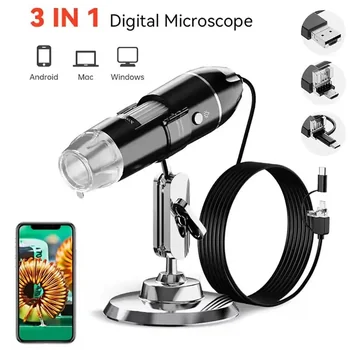

The world around us is filled with incredible details that are often invisible to the naked eye. From the intricate patterns on a circuit board to the delicate fibers of a textile, there's a universe waiting to be explored. A portable digital microscope camera offers the perfect tool to delve into this hidden realm, providing powerful magnification and the convenience of modern connectivity. This article will guide you through the features, applications, and specifications of a versatile digital microscope designed for both professionals and curious minds.
Unveiling Unseen Details with Powerful Magnification
At the heart of any microscope is its ability to magnify, and this portable digital microscope excels with impressive capabilities. Offering magnifications of up to 1600X, 1000X, and 500X, it allows users to clearly capture and observe even the most minute details. Whether you're examining fine circuitry or the surface of a coin, the enhanced view brings clarity to otherwise obscure elements.
To further enhance visibility, the microscope features a built-in array of 8 LED lights. These lights provide consistent and adjustable illumination directly onto the subject, ensuring that images are bright, sharp, and free from shadows. This integrated lighting system is crucial for obtaining high-quality observations, especially when working with intricate or low-contrast materials.
Designed for Portability and Convenience
Modern tools prioritize flexibility, and this electronic microscope is no exception. Its portable design ensures that you can take your micro-exploration laboratory wherever you go. The compact size and lightweight construction make it easy to carry, whether you're moving between workstations, conducting field observations, or simply exploring different areas of your home or workshop.
Connectivity is streamlined with a Type C USB interface, offering a universal and user-friendly connection to compatible devices. The microscope is also built with user comfort and durability in mind, featuring a premium anti-skid handle. This ergonomic design ensures a secure grip, reducing fatigue during prolonged use and enhancing precision in handling.
A Tool for Diverse Applications
The versatility of this digital microscope makes it an invaluable asset across numerous fields and hobbies. Its high magnification and clear imaging capabilities open up a wide range of practical uses:
- Soldering and Cell Phone Repair: Precision is paramount in electronics. The microscope serves as an excellent magnifier for intricate soldering tasks, circuit board inspection, and detailed cell phone repair, ensuring accuracy and reducing errors.
- Textile Inspection: Examine fabric weaves, fiber quality, and potential defects in textiles, making it useful for quality control or hobbyist textile artists.
- Jewelry Inspection: Inspect gemstones, metalwork, and hallmarks on jewelry for authenticity, quality, and damage.
- Collections/Coin Inspection: Enthusiasts can closely examine the fine details of stamps, coins, and other collectibles, identifying unique features or imperfections.
- Printing Inspection: Verify print quality, registration, and potential flaws in printed materials.
- PCB or PCBA Inspection: Conduct thorough inspections of Printed Circuit Boards and Printed Circuit Board Assemblies for manufacturing defects or component issues.
Ideal for Educational Exploration
Beyond professional applications, this portable microscope is also a fantastic educational tool. It serves as a perfect device for young learners and anyone with a curious mind to explore the micro world. Observing insects, examining skin surfaces, or inspecting various everyday objects transforms learning into an engaging and interactive experience. It fosters an understanding of hidden structures and processes, making science accessible and exciting.
Key Technical Specifications for Reliable Performance
The performance of this digital microscope is supported by robust technical specifications designed to deliver clear and reliable results:
- Image Sensor: Equipped with a 0.3M HD CMOS Sensor, it captures detailed images with good clarity.
- Photo and Video Resolution: Both photos and videos are captured at a resolution of 640 x 480 pixels, providing sufficient detail for most inspection and educational purposes.
- Focus Range: Users can manually adjust the focus from 15mm to 44mm, allowing for precise clarity across various object heights and sizes.
- Frame Rate: It operates at a maximum frame rate of 30 frames per second (30f/s), ensuring smooth video capture and real-time viewing.
- Magnification: The maximum optical magnification is 1600X, bringing very small features into view.
- Video Format: Captured videos are saved in AVI format, a widely compatible video standard.
Important Compatibility Note
To ensure optimal performance and seamless integration, it's crucial to be aware of the microscope's compatibility requirements. This device is specifically designed to support Android mobile phones that feature a UVC (USB Video Class) function. Additionally, for the microscope to operate normally, the OTG (On-The-Go) function switch on your Android device must be enabled. Please verify these capabilities on your mobile phone before use to ensure a smooth experience.
Conclusion
The portable digital microscope camera is a powerful, versatile, and user-friendly tool that opens up a new perspective on the world around us. Its high magnification, built-in illumination, robust construction, and wide range of applications make it indispensable for professionals in electronics repair and inspection, as well as for students and hobbyists exploring the wonders of the micro world. With its convenient Type C USB connectivity and clear imaging capabilities, it's ready to help you uncover the details that matter most.